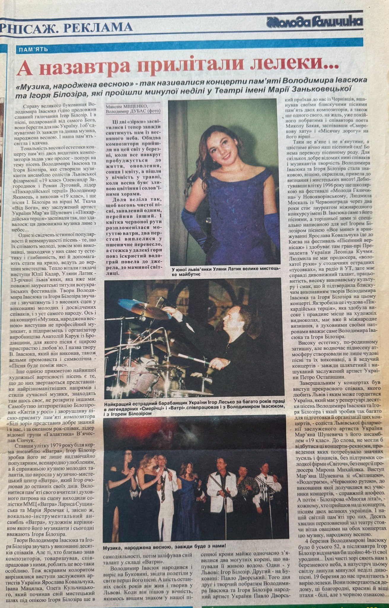

Moloda Halychyna Article (2001)

Basic Information
| Title | Moloda Halychyna Article |
| Material Type | Newspaper Article |
| Featured Artist | Uliana Latyk |
| Publication | Moloda Halychyna (Молода Галичина) |
| Issue | No. 27 (7881) |
| Publication Date | 22 March 2001 |
| Language | Ukrainian |
Description
On 22 March 2001, the Ukrainian newspaper Moloda Halychyna (Молода Галичина) published the article "А назавтра прилітали лелеки..." ("And the Storks Returned the Next Day..."), dedicated to memorial concerts honoring Volodymyr Ivasiuk and Ihor Bilozir. The publication includes a portrait photograph of Uliana Latyk accompanied by the caption "У юної львів'янки Уляни Латик велике мистецьке майбутнє." ("Young Lviv singer Uliana Latyk has a great artistic future."). The article also mentions Uliana Latyk among the young performers participating in the memorial concerts, noting that she had already earned prestigious laureate titles at Ukrainian vocal festivals. Today, this publication remains one of the earliest surviving newspaper articles documenting the public artistic recognition of Uliana Latyk before adopting the stage name Ana Danch.
Archive Information
| Archive Category | Press Publication |
| Original Name | Uliana Latyk |
| Current Stage Name | Ana Danch |
| Archive Reference | Newspaper Article (2001) |
| Country | Ukraine |
Credits
| Author | Максим Міщенко |
| Photograph | Володимир Дубас |
| Publication | Moloda Halychyna |
Source Information
| Publication | Moloda Halychyna (Молода Галичина) |
| Issue | No. 27 (7881) |
| Date | 22 March 2001 |
| Page | 8 |
Archive Materials
Front page of the newspaper.

Article page featuring Uliana Latyk.
Notes
This newspaper publication is preserved as one of the earliest surviving press materials documenting the artistic recognition of Uliana Latyk before adopting the stage name Ana Danch.